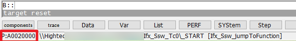
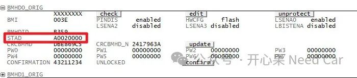
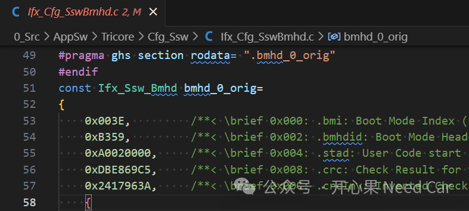

开心果 Need Car · 2024-01-19T07:00:00+08:00 · 微信原文
搭建过项目工程的小伙伴，对于用户启动地址设置应该不陌生。如果有祖传的项目Base，且Memory Layout未有改动，可以直接移植，工作相对会轻松一些。如果项目使用的芯片类型有变化，或者Memory Layout重新划分，那么，启动地址很可能需要重新设置，否则，程序将无法按照预期运行。如果要修改用户启动地址，如何操作呢？本文，基于TC3xx，聊一聊用户启动地址设置的问题。
1、程序启动流程
关于启动，在之前的文章中，有过介绍。可以参考前文《英飞凌tc397:告诉你程序真正的启动过程》、《嵌入式开发：程序如何找到第一条指令位置？》。本文，针对链接文件如何修改，BMHD（Boot Mode Header）如何操作进一步展开。
（一）链接文件修改
不管使用何种编译器，链接文件必不可少，因为它约束着程序、变量存放的位置。对于启动地址也不例外，也需要在链接文件中指定，以便于程序入口地址可以被分配到用户指定的位置，这样，CPU就可以准确的获取第一条指令位置。
链接文件中，用户可以自定义程序启动地址（eg：0xA0020000），同时，将该启动地址赋给复位标号（RESET），即：每次程序复位时，复位到程序的入口位置，如下所示：
......LCF_STARTPTR_NC_CPU0 = 0xA0020000;LCF_STARTPTR_NC_CPU1 = 0xA0110200;RESET = LCF_STARTPTR_NC_CPU0;......
将启动程序设置到启动地址开始的位置，对应段（Sections）的设置如下所示：
/*Fixed memory Allocations for _START*/CORE_ID = GLOBAL;SECTIONS{.start_tc0 (LCF_STARTPTR_NC_CPU0) : FLAGS(rxl) {KEEP (*(.start));}> pfls0_nc......}
如上仅仅对启动地址设置做了改动，对于Memory Layout的设计，因项目不同而有所不同，这个大家可以根据实际情况自行设定。
使用调试器执行复位动作，程序复位到自定义的启动位置，如下所示：

（二）BMHD设置用户启动地址
之前已经聊过，芯片加电以后，最先启动固件（BootROM）内容，而用户启动地址将安装在BMHD的STAD（Start Address）中，如下所示：


* 计算内容:* bmi = 0x003E* bmhdid = 0xB359* stad = 0xA0020000* 计算输入及结果:* Input = 0xB359003EA0020000* CRC value = 0xDBE869C5* CRC Inverted = 0x2417963A
往期精彩回顾
信息安全：ECC（椭圆曲线密码学）验签性能测试
开源Fast-DDS安装示例及DDS模型架构